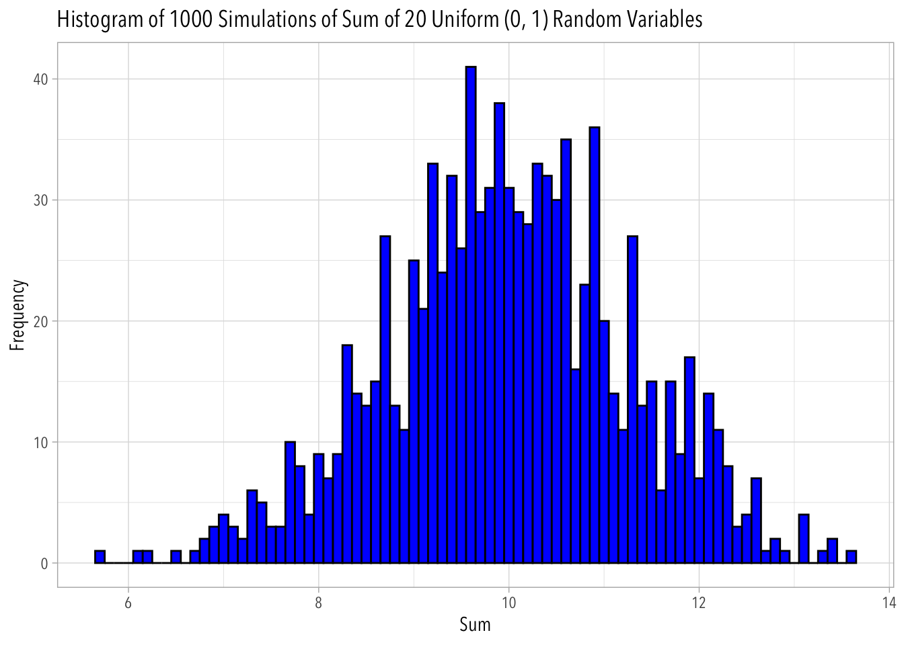

Use the mean() function to verify that x exhibits those four behaviors.
x <-rnorm(100000, mean =0, sd =1)mean_x<-mean(x)sd_x<-sd(x)# Calculating proportion of data within one SD of the meansum(abs(x - mean_x) <= sd_x) /length(x)
[1] 0.68328
# Calculating proportion of data within two SDs of the meansum(abs(x - mean_x) <=2* sd_x) /length(x)
[1] 0.95492
# Calculating the proportion of data above the meansum(x > mean_x) /length(x)
[1] 0.50085
# Calculating the proportion of data below the meansum(x < mean_x) /length(x)
[1] 0.49915
I verify that x:
The probability that x is within one sd from the mean is roughly 68%
The probability that x is within 2 sds from the mean is roughly 95%
The probability that x is above the mean is roughly 50%
The probability that x is below the mean is roughly 50%
4.2
Use the quantile() function on the x created in the previous exercise. Explain the results
The quantile() function returns a vector of quantiles, or the specific datapoints that divide the x dataset into intervals of equal probabilities: 0%, 25%, 50%, 75%, 100%. The x dataset is normally distributed with a target mean of 0, so as expected, the 50% quantile is approximately equal to 0. The 25% quantile is roughly symmetrical with the 75% quantile, and the 0% quantile is roughly symmetrical with the 100% quantile.
4.3
Now modify the probs argument in the quantile() to find the 0.5% and 99.5% percentiles of x.
# .5% percentilequantile(x, probs=0.005)
0.5%
-2.573671
# 99.5% quantilequantile(x, probs=0.995)
99.5%
2.580289
4.4
Use the mean() function to verify that the probability of x being between -2.576 and 2.576 is roughly 99%.
mean(x >=-2.576& x <=2.576)
[1] 0.98997
Yup! The probability that x is between -2.576 and 2.576 is roughly 99%
4.5
Let x=x1+…+x20, the sum of 20 independent uniform (0, 1) random variables. In R, create 1000 simulations of x and plot their histogram.
# Create an empty vector to store the sumssums <-numeric(1000)# Perform the simulationsfor (i in1:1000) {# Generate 20 independent uniform(0, 1) random variables and sum them sums[i] <-sum(runif(n=20, min =0, max=1))}# Create a data frame for ggplotdata <-data.frame(sums)# Create a histogram plot using ggplotggplot(data, aes(x = sums)) +geom_histogram(binwidth =0.1, fill ="blue", color ="black") +labs(title ="Histogram of 1000 Simulations of Sum of 20 Uniform (0, 1) Random Variables",x ="Sum",y ="Frequency")

Use the sd() function on the sampling distribution simulated earlier, then compare this value to the standard error given by….
sd(sums)
[1] 1.272787
sqrt(20/12)
[1] 1.290994
These two functions returned two super slightly different numbers (off by a difference of a few hundredths)--they pretty much match.
4.6
Many introductory statistics textbooks say that “sample sizes equal to or greater than 30 are often considered sufficient for the CLT to hold.” Write down intuitively what you think this means:
I think this means that as long as a sample contains 30 or more numbers, generally, the central limit theorem will hold true—this means that the sample will follow a normal distribution.
Repeat Steve’s simulation with different values of svy_size. Is the 95% confidence interval still roughly 2 standard errors away from 0.33? Do these results change your initial interpretation of the idea that “sample sizes equal to or greater than 30 are often considered sufficient for the CLT to hold” ?
# set up simulation "dressers"set.seed(123)est_prop <- .33num_sims <-10000svy_size_5 <-5svy_size_25 <-25svy_size_250<-250svy_size_2500 <-2500sims_5 <-tibble(sim_num =1:num_sims) |>uncount(svy_size_5)sims_25 <-tibble(sim_num =1:num_sims) |>uncount(svy_size_25)sims_250 <-tibble(sim_num =1:num_sims) |>uncount(svy_size_250)sims_2500 <-tibble(sim_num =1:num_sims) |>uncount(svy_size_2500)# do the sims with sample size of 5sims_5 <- sims_5 |>mutate(conservative =rbinom(num_sims*svy_size_5, 1, est_prop)) |>group_by(sim_num) |>summarize(prop =mean(conservative))lower_bound95_sims_5 <-quantile(sims_5$prop, .025)upper_bound95_sims_5 <-quantile(sims_5$prop, .975)ci95_sims_5 <-c(lower_bound95_sims_5, upper_bound95_sims_5)# do the sims with sample size of 25sims_25 <- sims_25 |>mutate(conservative =rbinom(num_sims*svy_size_25, 1, est_prop)) |>group_by(sim_num) |>summarize(prop =mean(conservative))lower_bound95_sims_25 <-quantile(sims_25$prop, .025)upper_bound95_sims_25 <-quantile(sims_25$prop, .975)ci95_sims_25 <-c(lower_bound95_sims_25, upper_bound95_sims_25)# do the sims with sample size of 250sims_250 <- sims_250 |>mutate(conservative =rbinom(num_sims*svy_size_250, 1, est_prop)) |>group_by(sim_num) |>summarize(prop =mean(conservative))lower_bound95_sims_250 <-quantile(sims_250$prop, .025)upper_bound95_sims_250 <-quantile(sims_250$prop, .975)ci95_sims_250 <-c(lower_bound95_sims_250, upper_bound95_sims_250)# do the sims with sample size of 2500sims_2500 <- sims_2500 |>mutate(conservative =rbinom(num_sims*svy_size_2500, 1, est_prop)) |>group_by(sim_num) |>summarize(prop =mean(conservative))lower_bound95_sims_2500 <-quantile(sims_2500$prop, .025)upper_bound95_sims_2500 <-quantile(sims_2500$prop, .975)ci95_sims_2500 <-c(lower_bound95_sims_2500, upper_bound95_sims_2500)
# inspecting standard deviations and confidence interavls of results based on survey size# n=5--the 95% confidence interval is not 2 standard errors away from 0.33sd(sims_5$prop)
[1] 0.2077866
ci95_sims_5
2.5% 97.5%
0.0 0.8
# n=25--the 95% confidence interval is slightly more than 2 standard errors away from .33 (but barely more)sd(sims_25$prop)
[1] 0.09291949
ci95_sims_25
2.5% 97.5%
0.16 0.52
# n=250--the 95% confidence interval is 2 standard errors away from 0.33sd(sims_250$prop)
[1] 0.02976397
ci95_sims_250
2.5% 97.5%
0.272 0.388
# n=2500--the 95% confidence interval is 2 standard errors away from 0.33sd(sims_2500$prop)
[1] 0.009429825
ci95_sims_2500
2.5% 97.5%
0.3116 0.3484
Based on these results, sample sizes greater than 30 are sufficient for the CLT to hold. However, the CLT won’t be true 100% of the time. I imagine that a sample size of 25 could sometimes be sufficient (my n=25 was very close!), and other times a sample size greater than 30 wouldn’t meet the CLT.